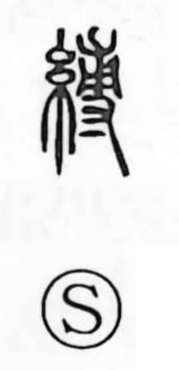

縛

Uncategorized
Kun: shibaru | On: baku
to bind ・ to tie up ・ arrest ・ restraint
Explanation
Shirakawa views 縛 as a phono-semantic character. The element 専 serves as the phonetic and, in its older form, shows a hand grasping a young plant and covering its roots; the character as a whole evokes tying those roots with cord. From this concrete agricultural act it broadened to the general sense of binding or tying up. This core idea is reflected in compounds such as 束縛 (restricting one’s freedom), 捕縛 (seizing and binding a person), 面縛 (hands bound behind at surrender with the face exposed), and 自縄自縛 (“bound by one’s own rope,” being trapped by one’s own words and actions).